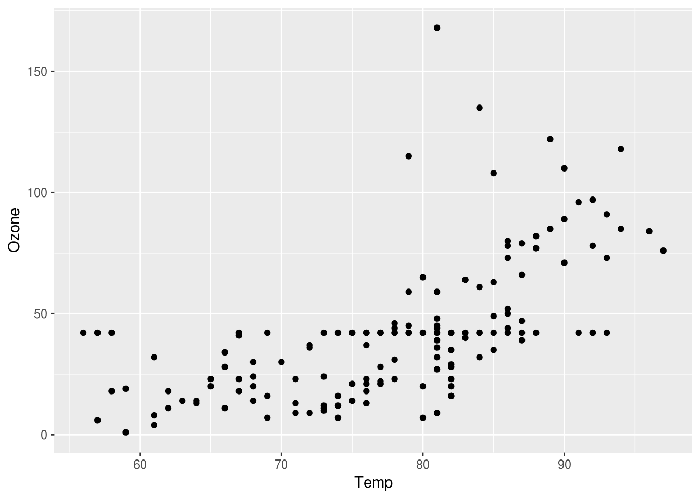

3 This time it’s for real!
Let’s pick up the pace and put our newfound skills to the test. For this section, we’re gonna use a dataset that looks more like what we’ll encounter in real life. It’s bigger in both dimensions; it has more rows but also more columns. It also has some missing data (oh noes!). Now things are getting real.
3.1 Loading and exploring a larger dataset
We can load our new dataset the same way as before, using the read.csv() function.
airquality <- read.csv('airquality.csv')Let’s take a moment to explore the new dataset using tools we learned in the previous section. Try str, head, summary and get a good feel for the dataset. We can find the number of rows using nrow.
nrow(airquality)## [1] 1533.2 Counting missing values
I mentioned this dataset has some missing data, you may have noticed it already when exploring. In R, missing values are represented by the NA symbol.
It’s always a good idea to check for missing values, even if you are sure your data is complete. We can ask R to tell us whether there are any NAs in the dataset using the is.na() function.
airquality %>% is.na()## Ozone Solar.R Wind Temp Month Day
## [1,] FALSE FALSE FALSE FALSE FALSE FALSE
## [2,] FALSE FALSE FALSE FALSE FALSE FALSE
## [3,] FALSE FALSE FALSE FALSE FALSE FALSE
## [4,] FALSE FALSE FALSE FALSE FALSE FALSE
## [5,] TRUE TRUE FALSE FALSE FALSE FALSE
## [6,] FALSE TRUE FALSE FALSE FALSE FALSE
## [7,] FALSE FALSE FALSE FALSE FALSE FALSE
## [8,] FALSE FALSE FALSE FALSE FALSE FALSE
## [9,] FALSE FALSE FALSE FALSE FALSE FALSE
## [10,] TRUE FALSE FALSE FALSE FALSE FALSE
## [11,] FALSE TRUE FALSE FALSE FALSE FALSE
## [12,] FALSE FALSE FALSE FALSE FALSE FALSE
## [13,] FALSE FALSE FALSE FALSE FALSE FALSE
## [14,] FALSE FALSE FALSE FALSE FALSE FALSE
## [15,] FALSE FALSE FALSE FALSE FALSE FALSE
## [16,] FALSE FALSE FALSE FALSE FALSE FALSE
## [17,] FALSE FALSE FALSE FALSE FALSE FALSE
## [18,] FALSE FALSE FALSE FALSE FALSE FALSE
## [19,] FALSE FALSE FALSE FALSE FALSE FALSE
## [20,] FALSE FALSE FALSE FALSE FALSE FALSE
## [21,] FALSE FALSE FALSE FALSE FALSE FALSE
## [22,] FALSE FALSE FALSE FALSE FALSE FALSE
## [23,] FALSE FALSE FALSE FALSE FALSE FALSE
## [24,] FALSE FALSE FALSE FALSE FALSE FALSE
## [25,] TRUE FALSE FALSE FALSE FALSE FALSE
## [26,] TRUE FALSE FALSE FALSE FALSE FALSE
## [27,] TRUE TRUE FALSE FALSE FALSE FALSE
## [28,] FALSE FALSE FALSE FALSE FALSE FALSE
## [29,] FALSE FALSE FALSE FALSE FALSE FALSE
## [30,] FALSE FALSE FALSE FALSE FALSE FALSE
## [31,] FALSE FALSE FALSE FALSE FALSE FALSE
## [32,] TRUE FALSE FALSE FALSE FALSE FALSE
## [33,] TRUE FALSE FALSE FALSE FALSE FALSE
## [34,] TRUE FALSE FALSE FALSE FALSE FALSE
## [35,] TRUE FALSE FALSE FALSE FALSE FALSE
## [36,] TRUE FALSE FALSE FALSE FALSE FALSE
## [37,] TRUE FALSE FALSE FALSE FALSE FALSE
## [38,] FALSE FALSE FALSE FALSE FALSE FALSE
## [39,] TRUE FALSE FALSE FALSE FALSE FALSE
## [40,] FALSE FALSE FALSE FALSE FALSE FALSE
## [41,] FALSE FALSE FALSE FALSE FALSE FALSE
## [42,] TRUE FALSE FALSE FALSE FALSE FALSE
## [43,] TRUE FALSE FALSE FALSE FALSE FALSE
## [44,] FALSE FALSE FALSE FALSE FALSE FALSE
## [45,] TRUE FALSE FALSE FALSE FALSE FALSE
## [46,] TRUE FALSE FALSE FALSE FALSE FALSE
## [47,] FALSE FALSE FALSE FALSE FALSE FALSE
## [48,] FALSE FALSE FALSE FALSE FALSE FALSE
## [49,] FALSE FALSE FALSE FALSE FALSE FALSE
## [50,] FALSE FALSE FALSE FALSE FALSE FALSE
## [51,] FALSE FALSE FALSE FALSE FALSE FALSE
## [52,] TRUE FALSE FALSE FALSE FALSE FALSE
## [53,] TRUE FALSE FALSE FALSE FALSE FALSE
## [54,] TRUE FALSE FALSE FALSE FALSE FALSE
## [55,] TRUE FALSE FALSE FALSE FALSE FALSE
## [56,] TRUE FALSE FALSE FALSE FALSE FALSE
## [57,] TRUE FALSE FALSE FALSE FALSE FALSE
## [58,] TRUE FALSE FALSE FALSE FALSE FALSE
## [59,] TRUE FALSE FALSE FALSE FALSE FALSE
## [60,] TRUE FALSE FALSE FALSE FALSE FALSE
## [61,] TRUE FALSE FALSE FALSE FALSE FALSE
## [62,] FALSE FALSE FALSE FALSE FALSE FALSE
## [63,] FALSE FALSE FALSE FALSE FALSE FALSE
## [64,] FALSE FALSE FALSE FALSE FALSE FALSE
## [65,] TRUE FALSE FALSE FALSE FALSE FALSE
## [66,] FALSE FALSE FALSE FALSE FALSE FALSE
## [67,] FALSE FALSE FALSE FALSE FALSE FALSE
## [68,] FALSE FALSE FALSE FALSE FALSE FALSE
## [69,] FALSE FALSE FALSE FALSE FALSE FALSE
## [70,] FALSE FALSE FALSE FALSE FALSE FALSE
## [71,] FALSE FALSE FALSE FALSE FALSE FALSE
## [72,] TRUE FALSE FALSE FALSE FALSE FALSE
## [73,] FALSE FALSE FALSE FALSE FALSE FALSE
## [74,] FALSE FALSE FALSE FALSE FALSE FALSE
## [75,] TRUE FALSE FALSE FALSE FALSE FALSE
## [76,] FALSE FALSE FALSE FALSE FALSE FALSE
## [77,] FALSE FALSE FALSE FALSE FALSE FALSE
## [78,] FALSE FALSE FALSE FALSE FALSE FALSE
## [79,] FALSE FALSE FALSE FALSE FALSE FALSE
## [80,] FALSE FALSE FALSE FALSE FALSE FALSE
## [81,] FALSE FALSE FALSE FALSE FALSE FALSE
## [82,] FALSE FALSE FALSE FALSE FALSE FALSE
## [83,] TRUE FALSE FALSE FALSE FALSE FALSE
## [84,] TRUE FALSE FALSE FALSE FALSE FALSE
## [85,] FALSE FALSE FALSE FALSE FALSE FALSE
## [86,] FALSE FALSE FALSE FALSE FALSE FALSE
## [87,] FALSE FALSE FALSE FALSE FALSE FALSE
## [88,] FALSE FALSE FALSE FALSE FALSE FALSE
## [89,] FALSE FALSE FALSE FALSE FALSE FALSE
## [90,] FALSE FALSE FALSE FALSE FALSE FALSE
## [91,] FALSE FALSE FALSE FALSE FALSE FALSE
## [92,] FALSE FALSE FALSE FALSE FALSE FALSE
## [93,] FALSE FALSE FALSE FALSE FALSE FALSE
## [94,] FALSE FALSE FALSE FALSE FALSE FALSE
## [95,] FALSE FALSE FALSE FALSE FALSE FALSE
## [96,] FALSE TRUE FALSE FALSE FALSE FALSE
## [97,] FALSE TRUE FALSE FALSE FALSE FALSE
## [98,] FALSE TRUE FALSE FALSE FALSE FALSE
## [99,] FALSE FALSE FALSE FALSE FALSE FALSE
## [100,] FALSE FALSE FALSE FALSE FALSE FALSE
## [101,] FALSE FALSE FALSE FALSE FALSE FALSE
## [102,] TRUE FALSE FALSE FALSE FALSE FALSE
## [103,] TRUE FALSE FALSE FALSE FALSE FALSE
## [104,] FALSE FALSE FALSE FALSE FALSE FALSE
## [105,] FALSE FALSE FALSE FALSE FALSE FALSE
## [106,] FALSE FALSE FALSE FALSE FALSE FALSE
## [107,] TRUE FALSE FALSE FALSE FALSE FALSE
## [108,] FALSE FALSE FALSE FALSE FALSE FALSE
## [109,] FALSE FALSE FALSE FALSE FALSE FALSE
## [110,] FALSE FALSE FALSE FALSE FALSE FALSE
## [111,] FALSE FALSE FALSE FALSE FALSE FALSE
## [112,] FALSE FALSE FALSE FALSE FALSE FALSE
## [113,] FALSE FALSE FALSE FALSE FALSE FALSE
## [114,] FALSE FALSE FALSE FALSE FALSE FALSE
## [115,] TRUE FALSE FALSE FALSE FALSE FALSE
## [116,] FALSE FALSE FALSE FALSE FALSE FALSE
## [117,] FALSE FALSE FALSE FALSE FALSE FALSE
## [118,] FALSE FALSE FALSE FALSE FALSE FALSE
## [119,] TRUE FALSE FALSE FALSE FALSE FALSE
## [120,] FALSE FALSE FALSE FALSE FALSE FALSE
## [121,] FALSE FALSE FALSE FALSE FALSE FALSE
## [122,] FALSE FALSE FALSE FALSE FALSE FALSE
## [123,] FALSE FALSE FALSE FALSE FALSE FALSE
## [124,] FALSE FALSE FALSE FALSE FALSE FALSE
## [125,] FALSE FALSE FALSE FALSE FALSE FALSE
## [126,] FALSE FALSE FALSE FALSE FALSE FALSE
## [127,] FALSE FALSE FALSE FALSE FALSE FALSE
## [128,] FALSE FALSE FALSE FALSE FALSE FALSE
## [129,] FALSE FALSE FALSE FALSE FALSE FALSE
## [130,] FALSE FALSE FALSE FALSE FALSE FALSE
## [131,] FALSE FALSE FALSE FALSE FALSE FALSE
## [132,] FALSE FALSE FALSE FALSE FALSE FALSE
## [133,] FALSE FALSE FALSE FALSE FALSE FALSE
## [134,] FALSE FALSE FALSE FALSE FALSE FALSE
## [135,] FALSE FALSE FALSE FALSE FALSE FALSE
## [136,] FALSE FALSE FALSE FALSE FALSE FALSE
## [137,] FALSE FALSE FALSE FALSE FALSE FALSE
## [138,] FALSE FALSE FALSE FALSE FALSE FALSE
## [139,] FALSE FALSE FALSE FALSE FALSE FALSE
## [140,] FALSE FALSE FALSE FALSE FALSE FALSE
## [141,] FALSE FALSE FALSE FALSE FALSE FALSE
## [142,] FALSE FALSE FALSE FALSE FALSE FALSE
## [143,] FALSE FALSE FALSE FALSE FALSE FALSE
## [144,] FALSE FALSE FALSE FALSE FALSE FALSE
## [145,] FALSE FALSE FALSE FALSE FALSE FALSE
## [146,] FALSE FALSE FALSE FALSE FALSE FALSE
## [147,] FALSE FALSE FALSE FALSE FALSE FALSE
## [148,] FALSE FALSE FALSE FALSE FALSE FALSE
## [149,] FALSE FALSE FALSE FALSE FALSE FALSE
## [150,] TRUE FALSE FALSE FALSE FALSE FALSE
## [151,] FALSE FALSE FALSE FALSE FALSE FALSE
## [152,] FALSE FALSE FALSE FALSE FALSE FALSE
## [153,] FALSE FALSE FALSE FALSE FALSE FALSEThis will list out TRUE or FALSE for every value in new_data, for the question “is this value equal to NA?”. It’s kind hard to read, though.
If we wanted to get a general sense of how many NAs there were in our entire dataset, we could do something like this:
airquality %>% is.na() %>% sum()## [1] 443.3 Ignoring missing values
If we try to call some descriptive statistics on any columns with NA values, we will get an ugly result. Let’s try getting the mean for Ozone levels.
mean(airquality[, 1])## [1] NANot what we were looking for.
By default, many functions in R will return NA if called on a vector with any NA values inside. We can override this behavior by adding the na.rm = TRUE argument
mean(airquality[, 1], na.rm = TRUE)## [1] 42.12931There are important questions to ask yourself when dealing with missing data, there’s no one-size-fits-all answer for it. A slapdash approach is to simply remove any rows with missing data.
aircomplete <- airquality[complete.cases(airquality), ]If you call nrow on aircomplete, you’ll see we have 111 rows now instead of the 153 we had before.
nrow(aircomplete)## [1] 1113.4 Imputing missing values
Another way to deal with missing data is to impute the values. In order to deal with missing data, you need to understand why it is missing in the first place. Is random data missing? Is it a function of how the data was collected? Were survey respondents hesitant to answer a question due to cultural or social norms?
There are a number of techniques you can use to impute missing values. This is a relatively advanced topic that we will not cover in depth today. However, we will give you one method to impute values for the airquality data set. Here we will use the impute function from the Hmisc package to impute data using a predictive mean matching algorithm.
require(Hmisc)## Loading required package: Hmisc## Loading required package: lattice## Loading required package: survival## Loading required package: Formula##
## Attaching package: 'Hmisc'## The following objects are masked from 'package:dplyr':
##
## combine, src, summarize## The following objects are masked from 'package:base':
##
## format.pval, round.POSIXt, trunc.POSIXt, unitsairquality$Ozone <- with(airquality, impute(Ozone, mean))
airquality$Solar.R <- with(airquality, impute(Solar.R, mean))Now that we’ve addressed missingness in our dataset, we’re ready to start analysis.
3.5 Visualizing the data using a script
We can start by visualizing the data. We have more data to play with now, but let’s start with the same plot we used last time.
plt <- ggplot(aircomplete) + geom_point(aes(x=Temp, y=Ozone))
print(plt)You’ll notice two new things about what we did here. First, we assign the output to plt, this will be important when we want to make adjustments to the plot later. Second, you’ll notice when we do that, nothing appears; we have to print the plt to get it to show up.
Now, I want you to go back and do everything we just did over again.
What, you think that’s ridiculous? The reality is, we often have to go back and make changes upstream. When we do this, it can get very, very painful if we’re doing everything interactively, in the console.
Before we move on, let’s introduce you to writing scripts.
– Picture of RStudio window here, arrow pointing to New Script –
Click the symbol for New Script and you’ll see RStudio’s built-in text editor pop up.
Let’s take a moment to put all our work in. I know it’s a pain but it will pay off if we want to make changes later.
require(ggplot2)
airquality <- read.csv('airquality.csv')
aircomplete <- airquality[complete.cases(airquality), ]
plt <- ggplot(aircomplete) + geom_point(aes(x=Temp, y=Ozone))
print(plt)
We can run the entire script by clicking Source at the top of the editor pane.
To run just a specific line or lines, you can select the section you want to run and then click Run
Let’s get back to our data. You may have seen a pattern in the plot we made earlier. Let’s pick up our analysis with a little more visualization and some modeling.
3.6 Modeling the data
We’ll model the data using the reliable lm() function again. Let’s add the following to the end of our script and Source it.
ozone_model <- lm(Ozone ~ Temp, data = aircomplete)
print(summary(ozone_model))##
## Call:
## lm(formula = Ozone ~ Temp, data = aircomplete)
##
## Residuals:
## Min 1Q Median 3Q Max
## -40.922 -17.459 -0.874 10.444 118.078
##
## Coefficients:
## Estimate Std. Error t value Pr(>|t|)
## (Intercept) -147.6461 18.7553 -7.872 2.76e-12 ***
## Temp 2.4391 0.2393 10.192 < 2e-16 ***
## ---
## Signif. codes: 0 '***' 0.001 '**' 0.01 '*' 0.05 '.' 0.1 ' ' 1
##
## Residual standard error: 23.92 on 109 degrees of freedom
## Multiple R-squared: 0.488, Adjusted R-squared: 0.4833
## F-statistic: 103.9 on 1 and 109 DF, p-value: < 2.2e-16Our model tells us there is a statistically significant relationship between Ozone and Temperature. If we want to add the linear model to our plot, we can use the geom_abline() function. geom_abline() takes two arguments, the intercept and slope. We can use the coef() function to extract those values from the model. Add the following lines to your script and Source it.
coef(ozone_model)## (Intercept) Temp
## -147.64607 2.43911With that info, we’re ready to add our linear model. Add the following lines to your script and Source it.
plt_2 <- plt + geom_abline(intercept = -147.64607 , slope = 2.43911)
print(plt_2)
3.7 Making a reproducible report
Great. Now, what if we want to make a report of our work? With R, you get the power of knitr, which will knit your work together into a report. Let’s try it on our current script. Go to File -> Knit Document, name the file airquality_report and select HTML, then watch the magic happen!
– example of switching out the data set and generating a new report here? –